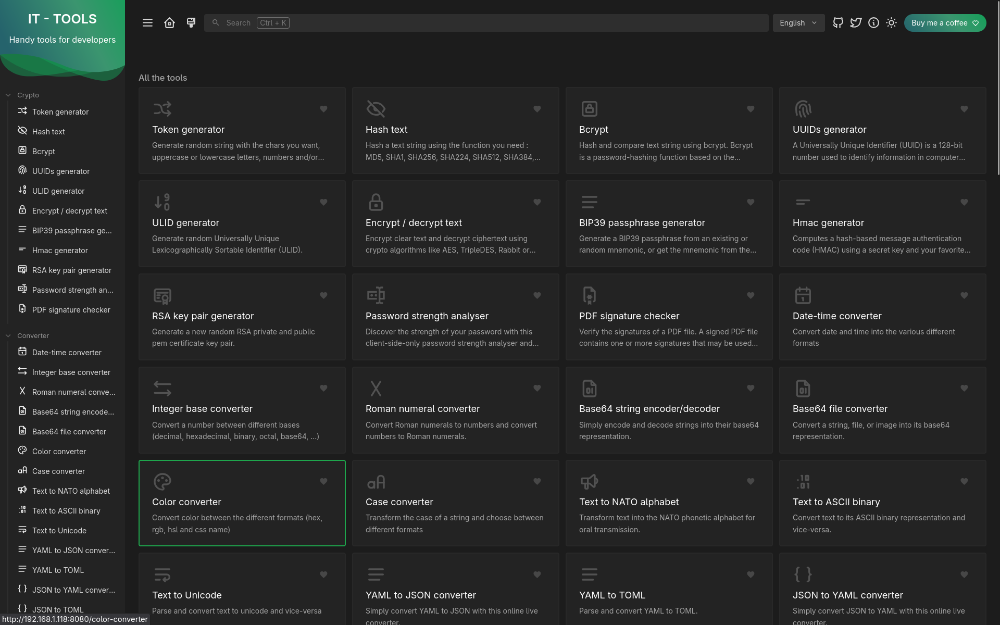

In this project I successfully deployed and configured IT-Tools on my Docker server to create a self-hosted suite of utilities for development and everyday technical tasks. This involved pulling the official container image, setting up Docker networking, and configuring environment variables to ensure smooth operation within my existing server infrastructure. I implemented proper container management practices, including persistent configuration, port mapping, and service monitoring to maintain reliability and accessibility. The deployment allows me to securely access a wide range of tools such as JSON formatting, encoding and decoding, and data conversion directly from my own environment without relying on third-party services. This project demonstrates my ability to work with containerized applications, manage Docker environments, and deploy practical, privacy-focused solutions for real-world use.